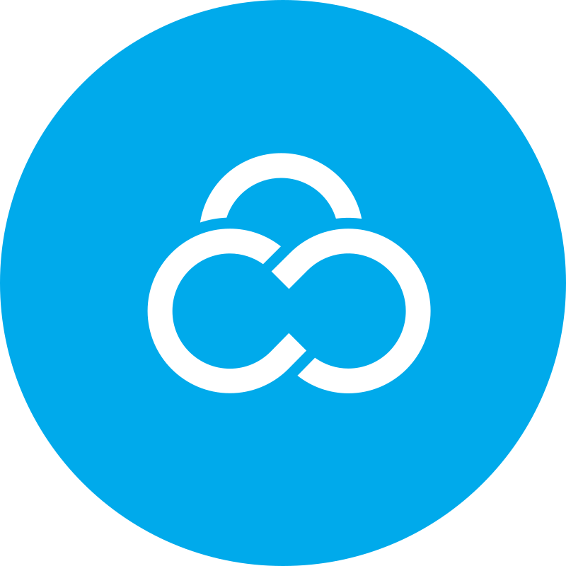

Desenvolvedor Back-End &
Analista de Dados
Automatizo processos, crio aplicações web, integrações de dados, painéis e agentes de IA, e cuido da infraestrutura que mantém tudo no ar, com segurança e atenção à LGPD.


Sobre mim
Sou Bernardo Cordeiro Motta, desenvolvedor back-end com mais de 9 anos de experiência transformando complexidade em automação. Fiz 3 anos de Bacharelado em Matemática na UFV (Universidade Federal de Viçosa) e saí para aproveitar oportunidades de trabalho. Depois me formei em Análise e Desenvolvimento de Sistemas pela UniViçosa e voltei à Matemática para dar continuidade a esse estudo: hoje curso Licenciatura em Matemática pela FAVENI (EAD). Essa base em lógica e pensamento analítico é o que aplico todo dia para resolver problemas técnicos complexos.
Minha jornada prática começou em agosto de 2017, quando fundei a Lykos Province e passei a desenvolver sistemas para redes de Minecraft com milhares de usuários registrados. Ali aprendi na prática sobre performance, escalabilidade e infraestrutura resiliente, e essa experiência com alto tráfego me ensinou a pensar em arquiteturas robustas desde o início.
Hoje sou desenvolvedor e analista de dados na Eficaz, uma rede de clínicas, e assumo também o que vai além desse escopo: infraestrutura, segurança, banco, integrações de dados e as 22 apps internas. Em paralelo, construo meu próprio SaaS de CRM com agentes de IA, fluxos no estilo n8n e cobrança, e sigo fazendo automação de processos para empresas. Meu foco é eliminar gargalos operacionais e transformar processos manuais em fluxos automatizados e confiáveis.
O que eu faço
Automação de Processos
Fluxos e agentes de IA que conectam WhatsApp, CRMs, e-mail, Meta, Google e sistemas internos, no n8n ou em código. Tiram tarefas repetitivas da equipe e encurtam o tempo de resposta ao cliente.
Infraestrutura & segurança
Servidores Linux com Docker, proxy e deploy a partir do Git, ambiente de teste separado, backup cifrado com restauração testada, monitoramento e cuidado com a LGPD.
Aplicações web & APIs
Aplicações em Next.js e APIs em Node.js e Python, sobre PostgreSQL ou MongoDB, com login por pessoa, papéis por área e dados sem risco de perda.
Dados & painéis
Dados de sistemas diferentes reunidos num banco só, com permissões por papel, e painéis com metas, previsão e comparativos, sob medida ou no Power BI.
Tech stack
Linguagens
6- TypeScript
 JavaScript
JavaScript Python
Python Java
Java- SQL
- Bash
Frameworks
7- Node.js
- React
- Next.js
- Tailwind CSS
 Django
Django- Flask
 Playwright
Playwright
Dados
4 PostgreSQL
PostgreSQL- MySQL
- MariaDB
- MongoDB
Infra & cloud
9- Linux
 Docker
Docker- Traefik
 Git
Git- GitHub
- GitLab
- Cloudflare
- AWS

Contabo
IA
5 Claude
Claude- OpenAI
 Gemini
Gemini- Grok
- Ollama
Automação
9 WhatsApp
WhatsApp- Meta Ads
- Google Ads
- n8n
 Gmail
Gmail- Google Sheets
- Google Docs
 Power BI
Power BI
Trajetória
-
Ago/2017 - 2023
Lykos Province
Fundador & Desenvolvedor
Onde comecei a programar: a comunidade de jogos que fundei, com uma rede de Minecraft de 8 servidores, lobby e proxy em VPS próprias (Pterodactyl), site com contas e loja e um bot no Discord com os dados dos servidores em tempo real. Mais de 1000 membros ativos. Ver o case
-
2018 - Presente
Desenvolvedor Autônomo
Back-end, DevOps & Automação
Freelas no mercado de jogos: construí a infraestrutura de servidores dos clientes, com pipelines de CI/CD e rotinas de backup, e até criei plugins autorais para eles. Hoje construo meu próprio SaaS multi-tenant de CRM, agentes de IA, fluxos de automação e cobrança (BAttomic, nome provisório).
-
2020 - 2023
Bacharelado em Matemática
UFV - Universidade Federal de Viçosa
-
2024 - 2026 · Formado
Análise e Desenvolvimento de Sistemas
UniViçosa
-
Ago/2024 - Jan/2025
OrangeStore
Técnico Especializado
Microsoldagem e reparo de componentes eletrônicos complexos. Experiência que desenvolveu precisão técnica, capacidade de diagnóstico avançado e resolução de problemas em nível de hardware.
-
Mar/2025 - Set/2025
PromovAds
Desenvolvedor
Automações integradas à Meta e ao Google e agentes de IA construídos no n8n, incluindo um agente de atendimento integrado ao WhatsApp, além da reestruturação completa da infraestrutura VPS com pipelines CI/CD. Foi aqui que surgiu a ideia de construir meu próprio CRM.
-
2026 - Em andamento
Licenciatura em Matemática
FAVENI · EAD
-
Out/2026 - Presente
Eficaz
Desenvolvedor & Analista de Dados
Rede com 5 unidades de medicina e odontologia e 3 franquias de cartão de benefícios. Além do desenvolvimento e da análise de dados, assumi também o que foge do escopo: um servidor herdado cheio de vulnerabilidades e problemas de LGPD, que resolvi e migrei para uma plataforma isolada e versionada (Docker Swarm, Traefik, PostgreSQL 18 com um papel por app), com backup cifrado, restauração testada toda semana, ambiente de teste e melhoria contínua. Em 8 semanas: 22 apps migradas ou criadas, 26 repositórios e mais de 630 commits, entre integrações de dados, painéis e um CRM de atendimento por WhatsApp. Ver o case
Futuro em construção